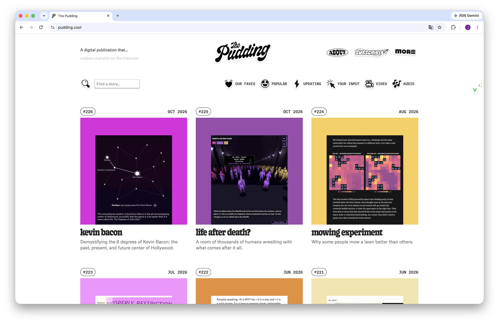

Screenshot
The desktop homepage of The Pudding.

Analysis
Link to the original website ↗
Simplified HTML structure
This outline summarizes the visible sections. It is not an exact copy of the website's source code.
<body>
<header>
<div class="description">...</div>
<a class="logo">...</a>
<nav>...</nav>
</header>
<main id="content">
<div class="toolbar">
<input type="search">
<div class="filters">...</div>
</div>
<div class="stories">
<article class="story">
<div class="metadata">
<span>Story number</span>
<time>Date</time>
</div>
<a href="story-page.html">
<img src="cover.jpg" alt="...">
<h2>Story title</h2>
</a>
<p>Short description</p>
</article>
<!-- More story cards -->
<aside class="newsletter">...</aside>
</div>
<section class="extras">
<div>Staff recommendation</div>
<div>Merchandise</div>
</section>
</main>
<footer>
<div>Support</div>
<div>Newsletter</div>
<div>About and social links</div>
</footer>
</body>Main containers
The page has a header, a main content area, and a footer. In the desktop view, the header places a short introduction on the left, the logo in the center, and navigation links on the right. The content stays within a centered area, leaving white space on both sides.
Below the header, a toolbar groups the search field and category filters. The story cards sit in a separate container called stories, which is visible in the developer tools. Grouping the cards in one container makes it easier to control their spacing and columns.
Repeated components
Each story card follows a similar order: a number and date, a square cover image, a title, and a short description. The images and text change, but the repeated arrangement makes the page easy to scan.
In the audio-filtered view I examined, a newsletter block takes the middle space between two story cards near the bottom. Below the stories are a staff recommendation and a merchandise section. The footer returns to a three-column arrangement.
Layout and grid
The desktop screenshots show three equal columns with consistent gaps. The square images align across each row. There is more space between rows than between columns, which helps separate the groups of stories.
At the narrower 610-pixel view, the cards appear in two columns. The introduction moves below the logo and navigation, and the category controls become a dropdown. The layout changes with the available width.
I could recreate the card layout using CSS Grid with grid-template-columns: repeat(3, 1fr), then use a media query to change it to two columns. Flexbox would work for the number and date, using justify-content: space-between. These are possible ways to rebuild the layout, rather than confirmed copies of the original CSS.
Typography and visual hierarchy
The story titles use a heavy, rounded serif style. The descriptions use a simpler sans-serif style in gray, while the numbers, dates, and filter labels have a compact monospaced appearance. These differences separate the titles from the supporting information.
The colorful covers attract attention first. The bold titles come next, followed by the smaller descriptions. The white background keeps the page from feeling too crowded, even though there are many stories.
What I would keep in my recreation
I would keep the centered page width, three-column desktop layout, square covers, and repeated card structure. I could replace the images and writing with my own content while keeping the original layout as a reference.
Questions
Questions to investigate while inspecting and rebuilding the page:
- At what screen width does the original story grid change from three columns to two?
- How does the newsletter block stay between two story cards? Is it part of the same grid?
- Some class names include
svelte-followed by letters and numbers. Are these names generated automatically, and how do they connect to the CSS? - How does the row of category filters change into a dropdown on a smaller screen?